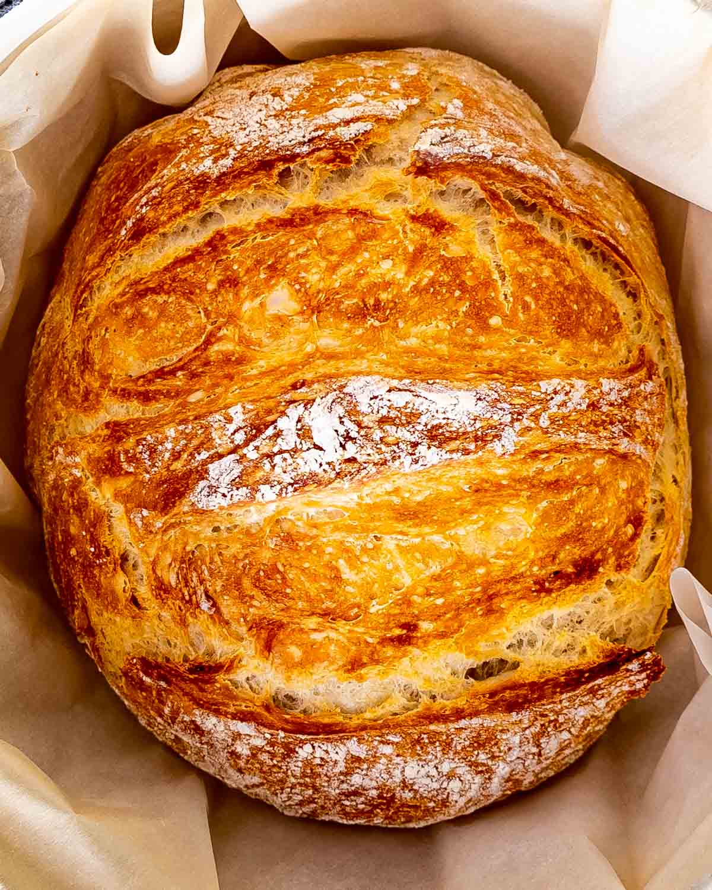

Bread

Description
Bread, as we all know, is a classic food item and a staple of any household.
There are a plethora of different ways you can make bread, but today we will be
creating a very simple base dough which we will shape into a loaf and bake.
Nothing too elaborate, but still delicious nonetheless!
Ingredients:
- 2 cups all-purpose flour
- 1 tbsp activated yeast
- 1 tsp salt
- 1 cup water
Steps:
- Combine your flour, water, salt and yeast in a bowl
- Mix the ingredients together until they are thoroughly combined
- Let the dough rest for at least 1 hour
- Once the dough is rested, shape it inside of a baking tray
- Bake at 400 degrees farenheit for 15 minutes, or until the crust is golden
- Remove from the oven and enjoy!